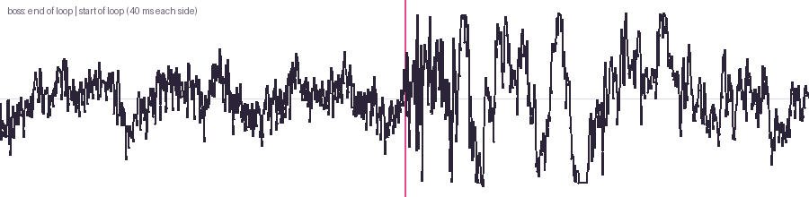
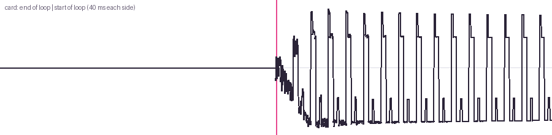
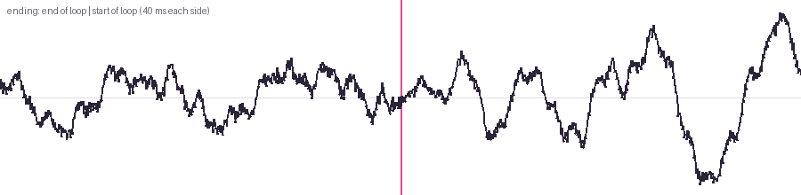
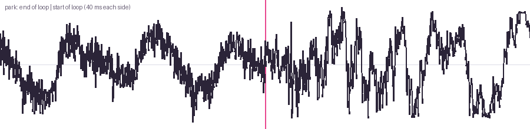
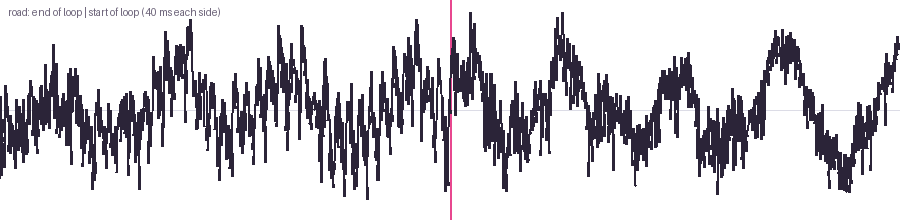
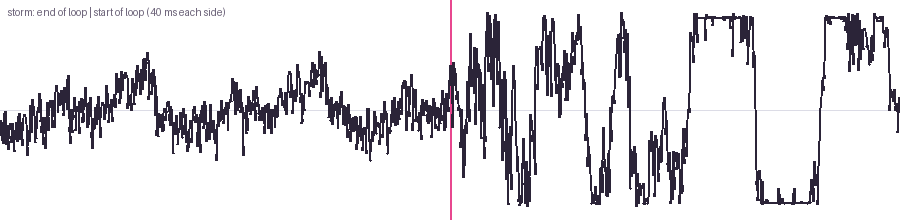
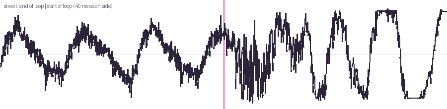
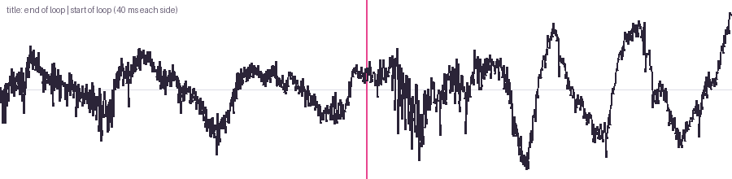

Audio proof
Every sound the test build plays (game-next). There are no voices any more: every line is a speech bubble, and the bubble blips are made in code at play time. Loudness is integrated LUFS (EBU R128), peak is true peak.
Music
| Track | LUFS | True peak dB | Length s |
|---|---|---|---|
| boss | -17.3 | -3.9 | 71.7 |
| card | -14.6 | -3.9 | 14.4 |
| ending | -17.3 | -4.0 | 44.6 |
| park | -17.3 | -6.4 | 72.8 |
| road | -17.3 | -6.8 | 81.9 |
| storm | -17.3 | -3.4 | 41.1 |
| street | -17.3 | -6.4 | 74.2 |
| title | -17.3 | -5.9 | 11.3 |
Music loop points
The pink line is where the loop jumps back to the start. A smooth line through it means no click. Jump is the sample step at the seam; for comparison, the 99th percentile step inside the track.








Sound effects
| Effect | LUFS | True peak dB | Length s |
|---|---|---|---|
| bell | -26.9 | -0.7 | 1.6 |
| bin | -70.0 | -0.8 | 0.2 |
| block | -70.0 | -1.5 | 0.4 |
| chime | -70.0 | -0.8 | 0.3 |
| crate | -70.0 | -0.7 | 0.4 |
| crate2 | -19.1 | -1.0 | 0.7 |
| finish | -20.4 | 0.8 | 0.6 |
| go | -70.0 | -3.5 | 0.4 |
| gullhit0 | -8.3 | -0.4 | 0.5 |
| gullhit1 | -14.5 | -1.2 | 0.6 |
| gullko | -14.9 | -1.6 | 1.1 |
| hurt | -18.0 | -0.5 | 0.5 |
| jump | -70.0 | -2.9 | 0.4 |
| kick | -20.4 | -0.5 | 0.6 |
| land | -70.0 | -0.7 | 0.2 |
| launch | -17.7 | -1.1 | 0.5 |
| punch0 | -70.0 | -0.6 | 0.4 |
| punch1 | -70.0 | -0.7 | 0.4 |
| scatter | -25.8 | -1.6 | 0.9 |
| skid | -70.0 | 0.1 | 0.4 |
| squawk0 | -8.8 | -1.1 | 0.8 |
| squawk1 | -14.7 | -0.7 | 0.9 |
| squawkbig | -13.6 | -0.2 | 0.6 |
| step0 | -70.0 | -0.9 | 0.2 |
| step1 | -70.0 | -1.0 | 0.2 |
| step2 | -70.0 | -0.5 | 0.2 |
| step3 | -70.0 | -0.6 | 0.2 |
| stepwood | -70.0 | -0.4 | 0.3 |
| thump | -18.0 | -0.5 | 0.5 |
| whoosh0 | -24.1 | -1.7 | 0.5 |
| whoosh1 | -22.2 | -2.4 | 0.5 |
| whoosh2 | -70.0 | -2.5 | 0.4 |
Short effects (under about 0.4 s) give a low or no integrated loudness reading: EBU R128 needs 400 ms blocks.